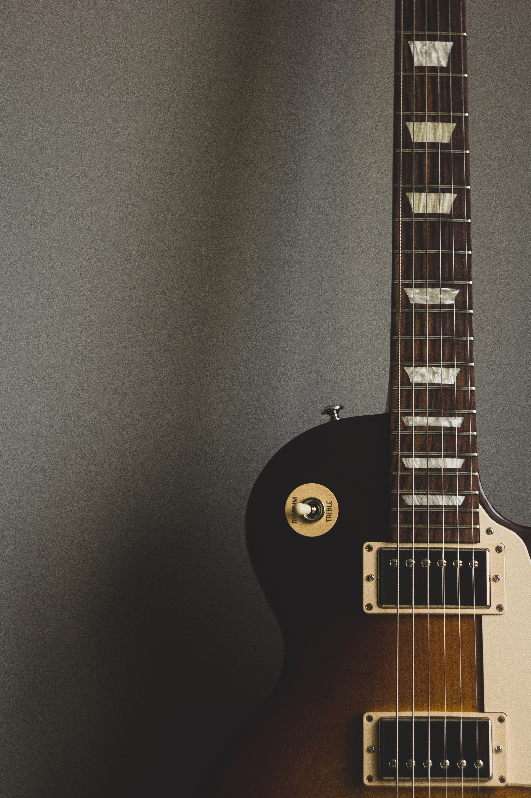

|
Single-Coils Cápsulas simples, comunmente usadas en las guitarras Stratocaster. El sonido clásico de la guitarra eléctrica. |
|
|  |
Humbuckers Cápsulas dobles, consisten en ser dos cápsulas simples interconectadas. El sonido del rock y el metal. |

|
P-90 Cápsulas híbridas. Con el tamaño de una Humbucker, pero el circuito de una Single-coil. Sonido potente y definido. |